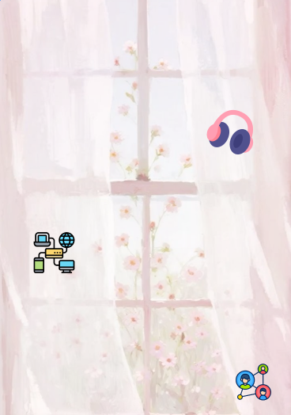
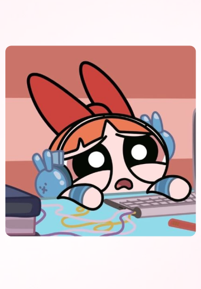
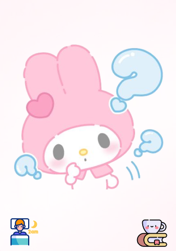
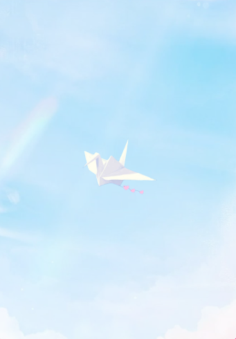
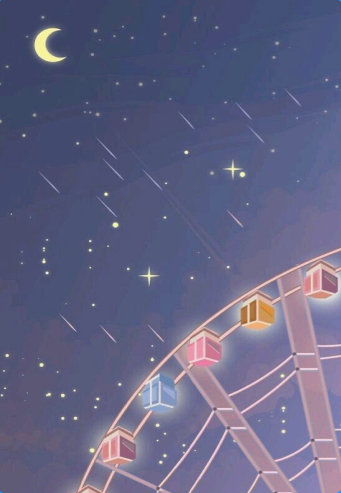

BLOOMY
Bloomy was a girl who liked quiet mornings and soft music in her ears.

Technology once felt exciting — full of new ideas and possibilities.
BLOOMY
But then, she began spending most of her free time on her phone,
often without meaning to.
Over time, Bloomy stopped noticing when hours slipped by.
BLOOMY

Her phone became the first thing she reached for and the last thing she put down. Even when she
wasn’t scrolling, her mind felt restless—like it was still moving at screen speed.
BLOOMY
Bloomy didn’t think anything was wrong.
She just felt tired. Unfocused. Disconnected from herself.
BLOOMY
What makes Bloomy different is not strength, but AWARENESS.
One day, she noticed how heavy everything felt—and instead of ignoring it,
she paid attention.
BLOOMY

She began questioning her habits, recognizing patterns, and listening to how her body and mind
reacted to the digital world.
BLOOMY
Bloomy doesn’t aim to quit technology or reject it.
She wants BALANCE. CONTROL.
SPACE to BREATHE.

Every small choice she makes—pausing, reflecting, setting limits
—becomes an act of resistance.
BLOOMY
Bloomy represents self-awareness in the digital world.
She grows not by escaping technology,
but by learning how to live with it without losing herself.
